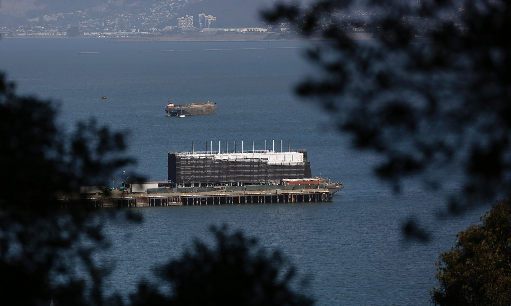
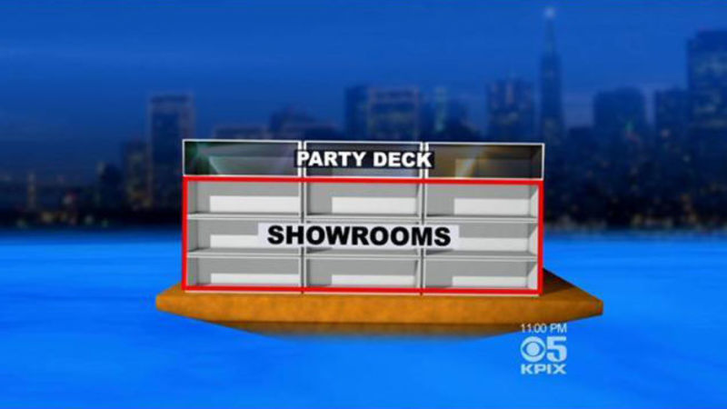
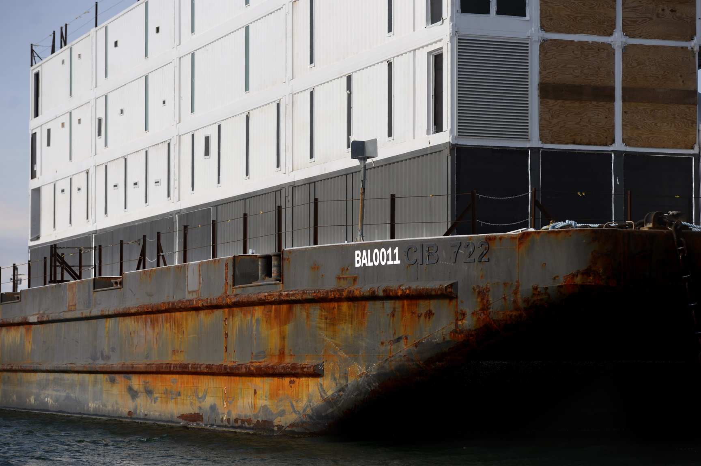
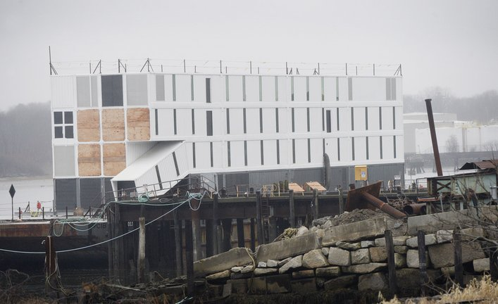
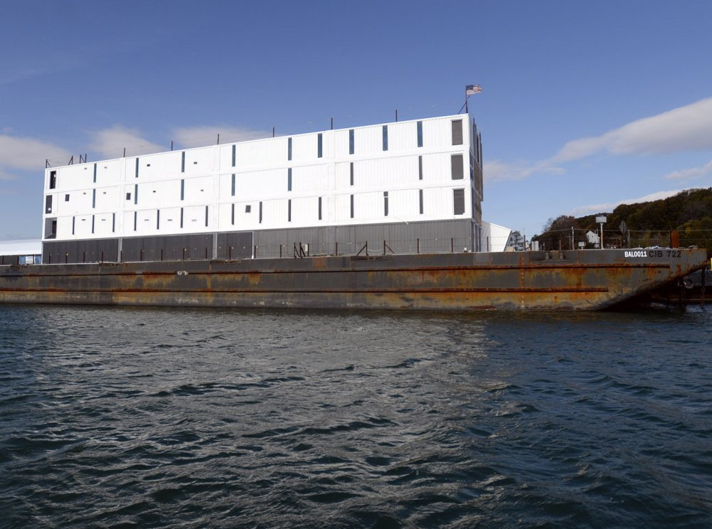
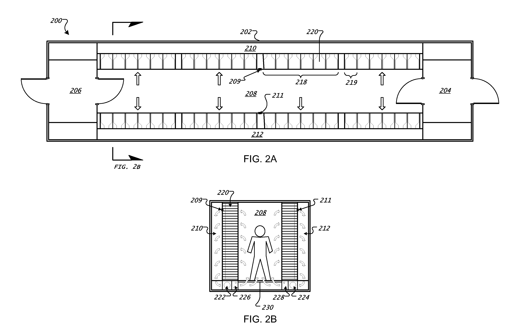
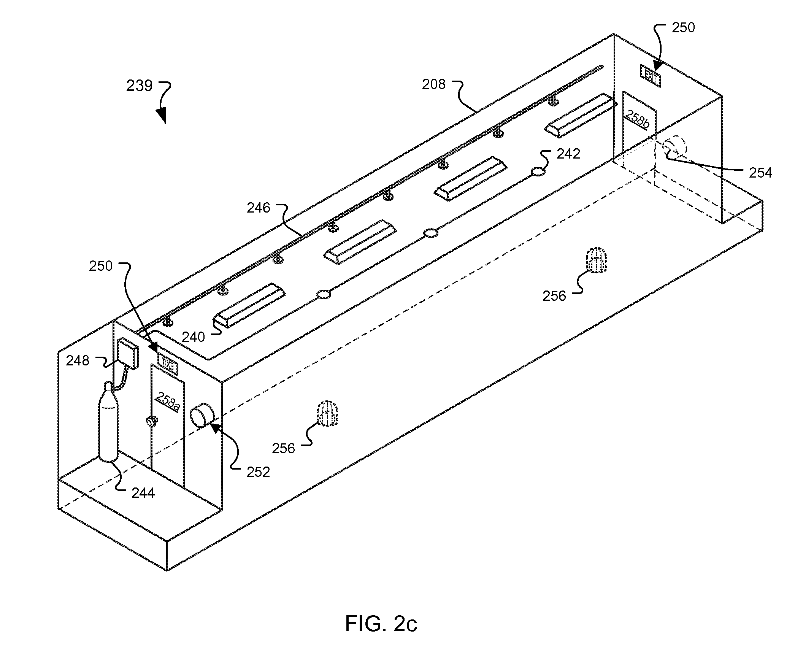
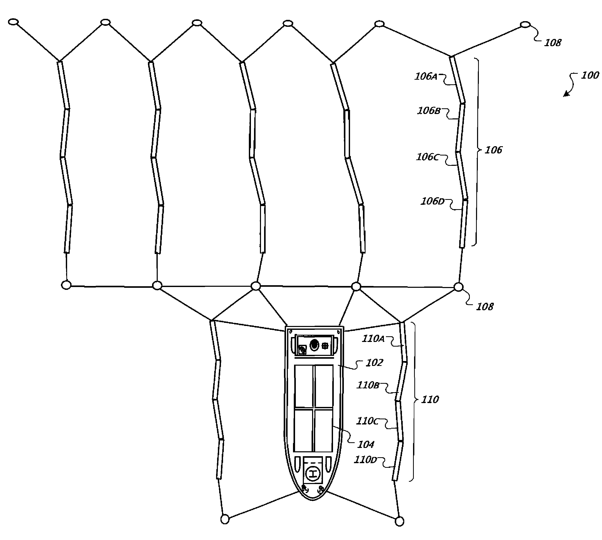
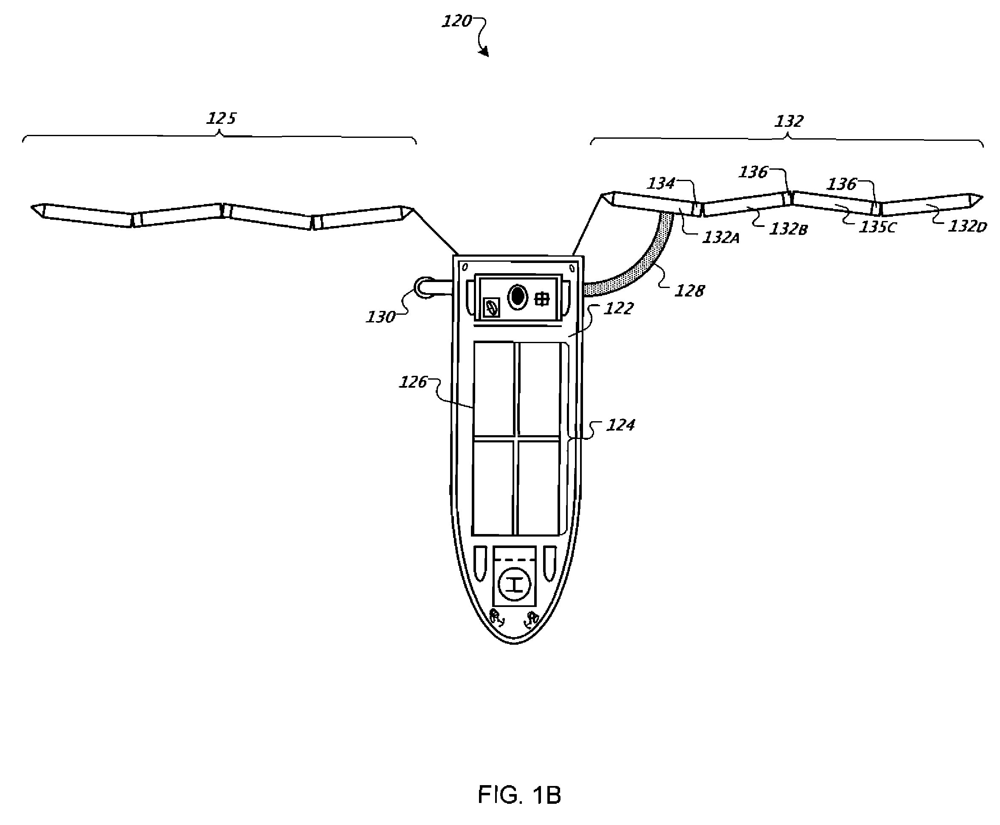
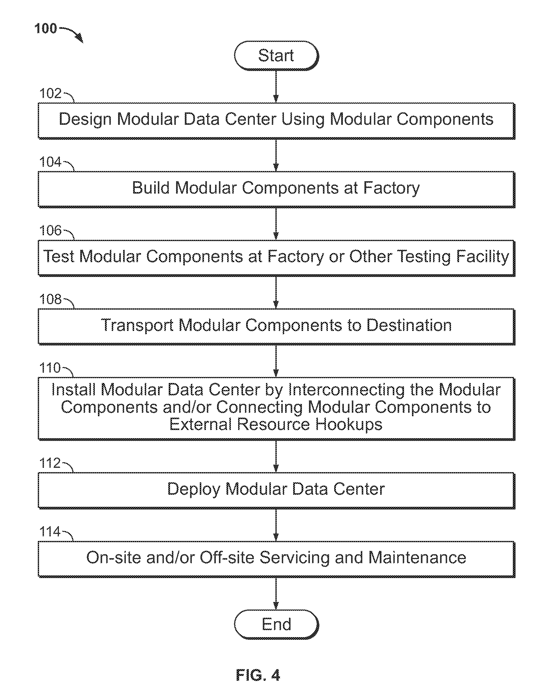

The Google Barges Project: An Extragovernmental Exercise?
Four floating barges built between 2011-2012, supposedly intended by google to serve as “an interactive space where people can learn about new technology”
“Google Barge ... A floating data center? A wild party boat? A barge housing the last remaining dinosaur? Sadly, none of the above. Although it’s still early days and things may change, we’re exploring using the barge as an interactive space where people can learn about new technology.”
—Google Spokesperson
Google halted work on the barges in late 2013, and began selling off the barges in 2014. The barges died before they ever began.
There were 4 barges total -- Named BAL0001, BAL0010, BAL0011, and BAL0100. All of them were 249.6 feet long, 72 feet wide, and 16 ft deep.

Each barge was 4 shipping containers wide, 4 shipping containers long, and 4 shipping containers deep. One container was slanted and acted as an entrance, making a total of 63 shipping containers.
Looking through some of the windows revealed windows on the other side, suggesting open interior spaces were created by removing some of the container walls.
Timeline
- 2010-2012: The four barges are built
- May 2013: BAL0011 first spotted in New London, Conneticut, where Turner Construction started building the superstructure made of shipping containers. The local coast guard refused to provide additional information about the barge, so The Day (A New London newspaper) filed a FOIA (freedom of Information Act) request for documents on the project
- July 2013: Michael Tierney of Google Glass: described that the vessel would travel from port to port, starting with New York Harbor. It is found out that the containers had been shipped from San Francisco to be assembled in New London
- October 9, 2013: BAL0011 is tugged to Portland, Maine.
- October 25, 2013: BAL0010 is moored at Treasure Island, San Francisco, a former US Navy Base. A reporter uncovers that the barges are owned by a shell company called Buy and Large LLC (A reference to the Disney movie WALL-E), which was set up by Google.
- October 30, 2013: SF Coast Guard confirms that the structure is associated with Google, but wouldn't comment further.
- November 6, 2013: Google's first public comment: “Google Barge ... A floating data center? A wild party boat? A barge housing the last remaining dinosaur? Sadly, none of the above. Although it’s still early days and things may change, we’re exploring using the barge as an interactive space where people can learn about new technology.” In actuality, construction had stopped several weeks earlier due to lack of permits
- July 31, 2014: The Portland Press Herald reported that at least one of the barges had been sold, and it's superstructure had been scrapped.
- November 2014: It is reported that Google barge project had been cancelled due to costs associated with meeting federal maritime safety regulations. The decision occurred in the fall of 2013, even as Google continued to release statements that the project was still in its early days.
Although Google's stated intent was to create some sort of high-end retail space/showroom, the more likely reason is that they intended to build near-shore seafaring data centers.
Evidence
- The amount of secrecy that surrounded this project seems disproportionate to the importance of a floating luxury showroom.
- The small windows make the structures less likely to be for human habitation.
- By building a vessel, and not a building, Google can avoid mandatory city building permits that may disclose their purpose.
- Google’s data center in Finland already uses seawater as a coolant.
- Google has a history of keeping their data centers a secret.
- Most damning, however, is the fact that there are 3 patents filed by Google that explicitly mention the use of shipping containers for the construction of a data center.
Patent 1: US8636565B2—Controlled Warm Air Capture
FILED in 2006 under shell company Exaflop LLC in China, Canada, the European Union, and the US. Granted in 2011.
ABSTRACT: A system for providing air circulation to rack-mounted computers can include a plurality of rack-mounted computers on a plurality of motherboards, each motherboard having a front end near a work space and a back end; one or more fans associated with the plurality of motherboards and adapted to deliver heated air from the computers to a common warm-air plenum; and one or more motor controllers coupled to the plurality of fans and adapted to maintain a substantially constant sensed exhaust temperature for air moved by the fans.
FIG. 2A shows a plan view of a data center 200 in a shipping container 202. Although not shown to scale in the figure, the shipping container 202 may be approximately 40 feet along, 8 feet wide, and 9.5 feet tall. Packaging of a data center in a shipping container may permit for more flexible and automated data center manufacture, such as by having a centrally-trained crew construct a large number of such data centers. In addition, the portability offered by a shipping container permits for quicker and more flexible deployment of data center resources, and thus allows for extension and projection of a network more easily to various areas.
...A central workspace 208 may be defined down the middle of shipping container 202 as an aisle in which engineers, technicians, and other workers may move when maintaining and monitoring the data center 200. For example, workspace 208 may provide room in which workers may remove trays from racks and replace them with new trays. In general, workspace 208 is sized to permit for free movement by workers and to permit manipulation of the various components in data center 200, including to provide space to slide trays out of their racks comfortably.
Patent 2: US7525207B2: Water-based Data Center
FILED in 2007. Granted in 2009.
ABSTRACT: A system includes a floating platform-mounted computer data center comprising a plurality of computing units, a sea-based electrical generator in electrical connection with the plurality of computing units, and one or more sea-water cooling units for providing cooling to the plurality of computing units.
Public use of the internet continues to grow, with millions of people now accessing the global network. The bandwidth demanded by each of those users also continues to grow substantially—moving from simple e-mails, to graphical web pages, to full streaming video at very high resolutions. In addition, with so-called Web 2.0 applications, more data is needed to support traditional computing applications over the internet. As a result, many information providers are building large computing facilities, known as data centers, that can provide various services to internet users. Sometimes, these data centers can contain thousands of networked computers mounted in a large number of racks.
The internet backbone also needs to grow to support the additional demand from all these new users and new services. Such growth is expensive, however, because backbone routers are huge, complex machines, and running of cross-country fibers costs very much money. In addition, cross-country communication can introduce latency to communications—both because of increased distances, and because of the increased chance of losing and retransmitting packets that are sent through many routers and through long distances.
Thus, it can be beneficial to distribute computing power closer to users. As such, data centers may be moved closer to users, with relevant content sent from a central facility out to regional data centers only once, and further transmissions occurring over shorter regional links. As a result, every request from a user need not result in a transmission cross-country and through the internet backbone—network activity may be more evenly balanced and confined to local areas. Also, transient needs for computing power may arise in a particular area. For example, a military presence may be needed in an area, a natural disaster may bring a need for computing or telecommunication presence in an area until the natural infrastructure can be repaired or rebuilt, and certain events may draw thousands of people who may put a load on the local computing infrastructure. Often, such transient events occur near water, such as a river or an ocean. However, it can be expensive to build and locate data centers, and it is not always easy to find access to necessary (and inexpensive) electrical power, high-bandwidth data connections, and cooling water for such data centers.
FIG. 1A shows a top view of a floating data center system 100 using wave-power. In general, the system 100 has a floating platform and an array of wave-powered generators. The wave-powered generators 106, 110 may be implemented, for example, in the form of Pelamis machines, as discussed in more detail below. The floating platform 102 carries one or more modules of a modular data center 104, which may be powered from electricity produced by the motion of the wave-powered generators 106, and may be cooled by cooling water pumped by the wave-powered generators 110. As a result, the data center modules may operate without being connected to external utilities.
Such an arrangement may beneficially permit for more ready deployment of data centers to areas in particular need of computing or telecommunications power. The data centers may be quickly and inexpensively constructed on land, such as in modular units, including standard shipping containers. They may then be hauled, as shipping containers, on trucks to the seaside, and may then be lifted in conventional manner onto a ship. Once on the ship, they may be connected to electrical and cooling services already on the ship, and the ship may deploy to an area in need of assistance. The ship may then anchor in an area offshore where wave or tidal motion is sufficiently strong or large so as to permit electrical generation and pumping power. In addition, old modules may be easily replaced with newer modules, as new technologies develop or as old units quickly wear out under adverse sea conditions. Moreover, by using standard shipping containers whose transportation is well known to most dock workers and seamen, the system 100 may be more readily transported and implemented without significant or specialized training.
The data centers 104 may be employed with the computers inside standard shipping containers to make them more portable (e.g., capable of being hauled to the boat or by a truck). The data centers 104 may be constructed modularly in areas having low costs, and may be transported to locations needing communications support relatively quickly. The data centers 104 may be offloaded to areas where a more permanent presence is needed, and may also be connected to the motion-powered machines 106, 110 after such offloading, freeing the ship to deploy to another area. Also, data centers 104, when in the form of shipping containers, may be quickly traded out when technology changes. Modularization also makes maintenance simpler; hardware that is corroded or worn out from the harsh salt water environment can be easily replaced with fresh hardware by swapping containers.
The floating platform 122 may, for example, include a seagoing ship such as a freighter. The modular data center 124 may make use of shipping containers 126, such as standardized intermodal freight containers, to hold the data center's equipment. The shipping containers 126 may be loaded and unloaded using conventional port equipment. In the event that one or more modules 126 of the data center 124 needs to be replaced, the floating data center system 120 may simply pull into a port and have the appropriate modules swapped out and replaced with new ones.
Patent 3: US9565783B1: Modular Data Center
FILED in 2003, granted 2007.
ABSTRACT: Modular data centers with modular components suitable for use with rack or shelf mount computing systems, for example, are disclosed. The modular center generally includes a modular computing module including an intermodal shipping container and computing systems mounted within the container and configured to be shipped and operated within the container and a temperature control system for maintaining the air temperature surrounding the computing systems. The intermodal shipping container may be configured in accordance to International Organization for Standardization (ISO) container manufacturing standards or otherwise configured with respect to height, length, width, weight, and/or lifting points of the container for transport via an intermodal transport infrastructure. The modular design enables the modules to be cost effectively built at a factory and easily transported to and deployed at a data center site.
FIG. 4 is a flowchart of an illustrative process 100 for constructing and deploying a modular data center containing one or more modular components. At block 102, a modular data center is designed using modular components. The modular datacenter may include one or more modular components and the modular components may include, for example, computing modules, office modules, power and/or cooling modules, and/or cooling towers. The computing module may also be a largely self-contained system.
The modular components of the modular data center are built at a factory or other centralized build facilities at block 104. The modular components can be tested either at the same factory or at a separate testing facility at block 106. The modular components are then transported to the destination at block 108. Because most if not all of the modular components are self-contained within an intermodal shipping container of the same or various sizes, transporting the modular components can be easily achieved utilizing the existing worldwide road, rail, and/or vessel container handling infrastructure.
At block 110, the modular components are interconnected and/or connected to external resources such as electricity, natural gas, water, and/or Internet connections to form the modular data center. At block 112, the modular data center is deployed and placed into operation. At block 114, servicing and/or maintenance of the modular components may be performed on-site and/or off-site. For off-site servicing and/or maintenance, the respective modular component can be disconnected from other modular component(s) and/or various resource connections and transported to a servicing facility, e.g., the build factory or facility or a separate maintenance facility, and then returned to the original.
Furthermore, the modular data center facilitates rapid and easy relocation to another site depending on changing economic factors, for example. The modular data centerthus helps to make the moving of a data center more cost effective and thus more economically feasible. In one implementation, a modular system may reduce the cost of moving by approximately 60 to 80% to provide more viable options even within the nominal life of a module.